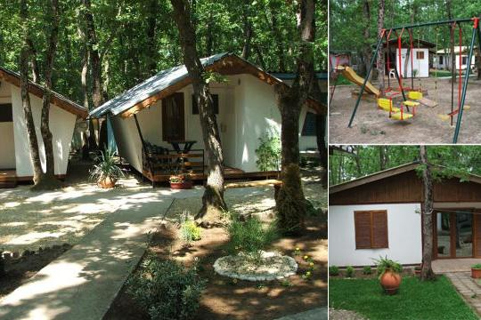

|  |
Вили ,,Витоша 1“ се намират на около 300м. от северния плаж на град Китен. Плажът ,,Атлиман“ е един от най-красивите плажове на Южното Черноморие на България. Същевременно с близостта на морето вилите са разположени в сенчеста и прохладна дъбова гора непосредствено до град Китен (приблизително 200м.)
Вили ,,Витоша 1“ е озеленен с тревни площи и цветни градинки, което допринася за доброто настроение и почивка на гостите. Мястото е оградено, тихо и спокойно, което го прави подходящо за почивка на семейства с малки деца и хора, предпочитащи спокойствието. Също така има самостоятелен паркинг и детска площадка с люлки, пясъчник и пързалка. |